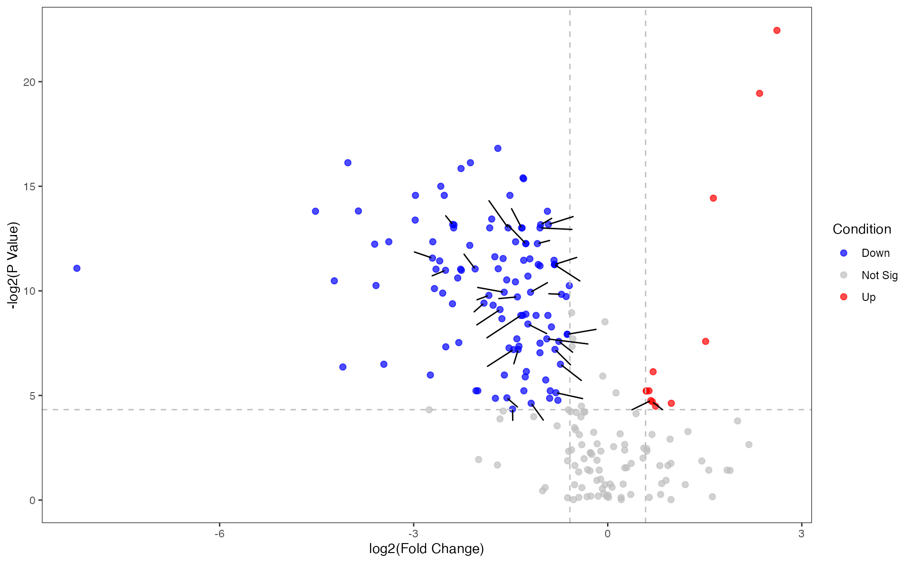
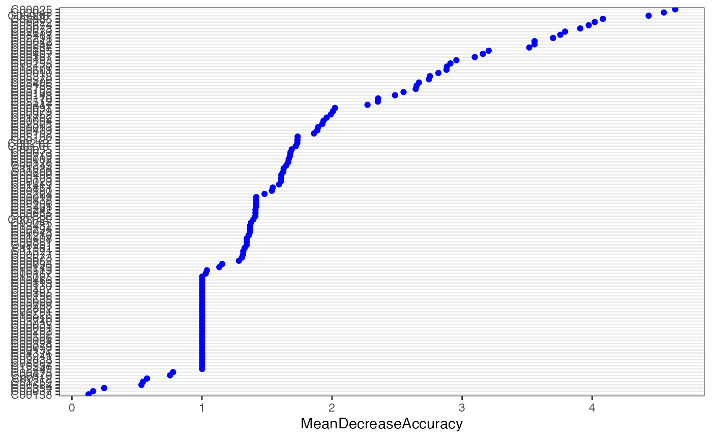
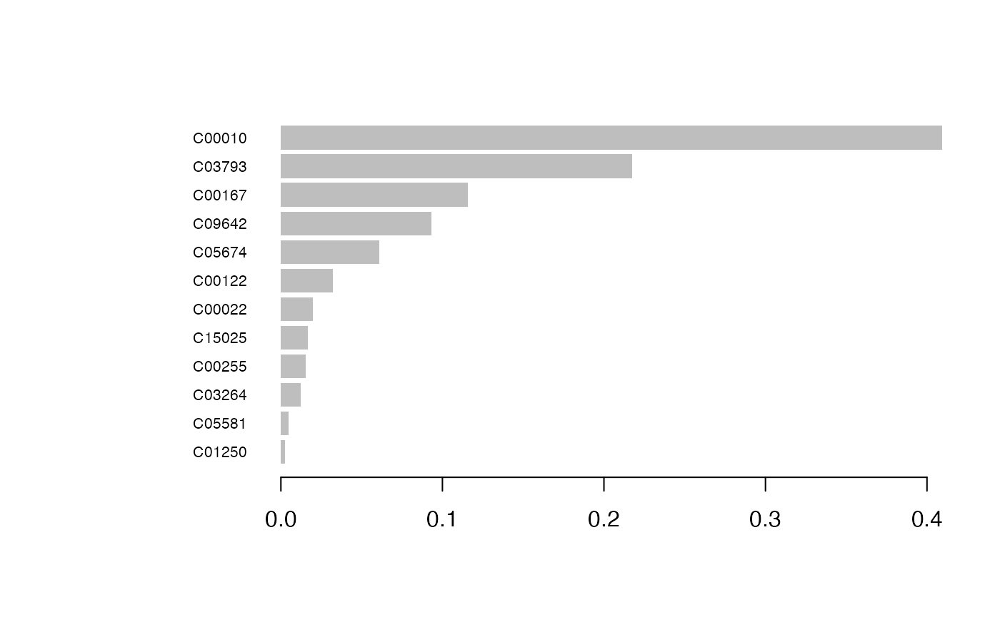

Metabolite compound name transformation
Metabolite compound name transform to RefMet name
This step requires networking
RefMet: A Reference list of Metabolite names.The main objective of RefMet is to provide a standardized reference nomenclature for both discrete metabolite structures and metabolite species identified by spectroscopic techniques in metabolomics experiments.
library(MNet)
library(dplyr)
library(tibble)
library(survival)
library(tidyr)
library(knitr)
library(stringr)
library(ggplot2)
library(RColorBrewer)
library(clusterProfiler)
library(org.Hs.eg.db)
library(pathview)
compound_name <- c("2-Hydroxybutyric acid",
"1-Methyladenosine",
"tt",
"2-Aminooctanoic acid")
## transform the compound name to refmet name
refmetid_result <- name2refmet(compound_name)
head(refmetid_result)## Input_name Refmet_name Formula Super_class
## 1 2-Hydroxybutyric acid 2-Hydroxybutyric acid C4H8O3 Fatty Acyls
## 2 1-Methyladenosine 1-Methyladenosine C11H15N5O4 Nucleic acids
## 3 tt tt - -
## 4 2-Aminooctanoic acid 2-Aminocaprylic acid C8H17NO2 Fatty Acyls
## Main_class Sub_class
## 1 Fatty acids Hydroxy FA
## 2 Purines Purine ribonucleosides
## 3 - -
## 4 Fatty acids Amino FAMetabolite compound name transform to KEGG ID
This step requires networking
Transform the metabolites compound name to KEGG ID
compound_name <- c("2-Hydroxybutyric acid",
"1-Methyladenosine",
"tt",
"2-Aminooctanoic acid")
## transform the compound name to KEGG ID, some metabolites have several KEGG ID
keggid_result <- name2keggid(compound_name) %>%
separate_rows(KEGG_id, sep = ";")
head(keggid_result)## # A tibble: 4 × 2
## Name KEGG_id
## <chr> <chr>
## 1 2-Hydroxybutyric acid C05984
## 2 1-Methyladenosine C02494
## 3 tt NA
## 4 2-Aminooctanoic acid NAMetabolite name corresponding to kegg pathway
This step requires networking
Search the kegg pathway corresponding to the metabolite name
compound_name <- c("2-Hydroxybutyric acid",
"1-Methyladenosine",
"tt",
"2-Aminooctanoic acid")
## Search the kegg pathway corresponding to the metabolite name
result_all <- name2pathway(compound_name)
head(result_all)## $name2pathway
## # A tibble: 1 × 5
## Name KEGG_id Pathway Pathway_category Pathway_id
## <chr> <chr> <chr> <chr> <chr>
## 1 2-Hydroxybutyric acid C05984 Propanoate metaboli… Carbohydrate me… hsa00640
##
## $pathway
## # A tibble: 1 × 16
## name nAnno nOverlap fc zscore pvalue adjp or CIl CIu distance
## <chr> <dbl> <dbl> <dbl> <dbl> <dbl> <dbl> <dbl> <dbl> <dbl> <chr>
## 1 Propanoat… 40 1 76.1 8.66 0 0 Inf 1.93 Inf 1
## # ℹ 5 more variables: namespace <chr>, members_Overlap <chr>,
## # members_Anno <chr>, members_Overlap_name <chr>, members_Anno_name <chr>
##
## $kegg_id
## # A tibble: 4 × 2
## Name KEGG_id
## <chr> <chr>
## 1 2-Hydroxybutyric acid C05984
## 2 1-Methyladenosine C02494
## 3 tt NA
## 4 2-Aminooctanoic acid NA
##### Output is the each metabolite related pathway
result_name2pathway <- result_all$name2pathway
head(result_name2pathway)## # A tibble: 1 × 5
## Name KEGG_id Pathway Pathway_category Pathway_id
## <chr> <chr> <chr> <chr> <chr>
## 1 2-Hydroxybutyric acid C05984 Propanoate metaboli… Carbohydrate me… hsa00640
## the KEGG ID of the metabolite name
result_name2keggid <- result_all$kegg_id
head(result_name2keggid)## # A tibble: 4 × 2
## Name KEGG_id
## <chr> <chr>
## 1 2-Hydroxybutyric acid C05984
## 2 1-Methyladenosine C02494
## 3 tt NA
## 4 2-Aminooctanoic acid NA
## the pathway of the metabolite name
result_name2enrichpathway <- result_all$pathway
head(result_name2enrichpathway)## # A tibble: 1 × 16
## name nAnno nOverlap fc zscore pvalue adjp or CIl CIu distance
## <chr> <dbl> <dbl> <dbl> <dbl> <dbl> <dbl> <dbl> <dbl> <dbl> <chr>
## 1 Propanoat… 40 1 76.1 8.66 0 0 Inf 1.93 Inf 1
## # ℹ 5 more variables: namespace <chr>, members_Overlap <chr>,
## # members_Anno <chr>, members_Overlap_name <chr>, members_Anno_name <chr>Metabolite KEGG ID transform to KEGG pathway
KEGG ID transform to KEGG pathway
keggid <- c("C05984", "C02494")
##### the output is the each metabolite related pathway
keggpathway_result <- keggid2pathway(keggid)
head(keggpathway_result)## # A tibble: 1 × 5
## ENTRY NAME PATHWAY pathway_type V2
## <chr> <chr> <chr> <chr> <chr>
## 1 C05984 2-Hydroxybutanoic acid;///2-Hydroxybutyrate… Propan… Carbohydrat… hsa0…Pathway information
Get the gene and the metabolite in the pathway
## the genes and metabolites in pathway 'hsa00630'
result <- pathwayinfo("hsa00630")
## the genes and metabolites in pathway 'Glyoxylate and dicarboxylate metabolism'
result <- pathwayinfo("Glyoxylate and dicarboxylate metabolism")
head(result$gene_info[1:2, ])## type name kegg_pathwayid kegg_pathwayname
## 1 gene ACSS1 hsa00630 Glyoxylate and dicarboxylate metabolism
## 2 gene ACSS2 hsa00630 Glyoxylate and dicarboxylate metabolism
## kegg_category
## 1 Carbohydrate metabolism
## 2 Carbohydrate metabolism
head(result$compound_info[1:2, ])## type name kegg_pathwayid kegg_pathwayname
## 1 metabolite C00007 hsa00630 Glyoxylate and dicarboxylate metabolism
## 2 metabolite C00011 hsa00630 Glyoxylate and dicarboxylate metabolism
## kegg_category
## 1 Carbohydrate metabolism
## 2 Carbohydrate metabolismPathway name transform to pathway id
Transform the KEGG pathway name to KEGG pathway ID
## the KEGG pathway ID of pathway name
pathwayid <- pathway2pathwayid("Glycolysis / Gluconeogenesis")
head(pathwayid)## PATHWAY pathwayid
## 1 Glycolysis / Gluconeogenesis hsa00010Group-wise analyses


Differnetial metabolite analysis
Function ‘mlimma’
## mlimma is the function of Differential Metabolite analysis by limma
diff_result <- mlimma(meta_dat, group)
head(diff_result)## # A tibble: 6 × 8
## logFC AveExpr t P.Value adj.P.Val B logP name
## <dbl> <dbl> <dbl> <dbl> <dbl> <dbl> <dbl> <chr>
## 1 2.86 22.6 9.25 1.52e-10 0.0000000332 14.1 7.48 C02045
## 2 2.44 26.2 7.80 6.83e- 9 0.000000748 10.4 6.13 C00267
## 3 -1.82 27.1 -6.80 1.10e- 7 0.00000622 7.64 5.21 C00073
## 4 -3.78 20.9 -6.79 1.14e- 7 0.00000622 7.61 5.21 C05674
## 5 -2.20 21.4 -6.58 2.07e- 7 0.00000907 7.02 5.04 C00255
## 6 -2.37 21.6 -6.45 2.98e- 7 0.0000109 6.66 4.96 C00242Function ‘DM’
## DM is the function of Differential Metabolite analysis by OPLS-DA
diff_result <- DM(2 ** meta_dat, group)## OPLS-DA
## 31 samples x 219 variables and 1 response
## standard scaling of predictors and response(s)
## R2X(cum) R2Y(cum) Q2(cum) RMSEE pre ort pR2Y pQ2
## Total 0.485 0.864 0.697 0.194 1 1 0.05 0.05
head(diff_result)## # A tibble: 6 × 7
## Name Fold_change PValue_t Padj_t PValue_wilcox Padj_wilcox VIP
## <chr> <dbl> <dbl> <dbl> <dbl> <dbl> <dbl>
## 1 C09642 0.842 0.168 0.221 0.173 0.224 0.520
## 2 C05581 0.402 0.000793 0.00220 0.00192 0.00494 1.12
## 3 C03264 0.434 0.0000617 0.000338 0.000187 0.000855 1.33
## 4 C15025 0.683 0.00266 0.00614 0.00763 0.0165 0.995
## 5 C00408 1.63 0.00688 0.0142 0.0187 0.0359 1.03
## 6 C02918 0.497 0.677 0.734 0.0855 0.125 0.0628
## filter the differential metabolites by default fold change >1.3 or < 1/1.3 ,fdr < 0.05 and VIP>0.8
diff_result_filter <- diff_result %>%
filter(Fold_change > 1.3 | Fold_change < 1 / 1.3) %>%
filter(Padj_wilcox < 0.1) %>%
filter(VIP > 0.8)
head(diff_result_filter)## # A tibble: 6 × 7
## Name Fold_change PValue_t Padj_t PValue_wilcox Padj_wilcox VIP
## <chr> <dbl> <dbl> <dbl> <dbl> <dbl> <dbl>
## 1 C05581 0.402 0.000793 0.00220 0.00192 0.00494 1.12
## 2 C03264 0.434 0.0000617 0.000338 0.000187 0.000855 1.33
## 3 C15025 0.683 0.00266 0.00614 0.00763 0.0165 0.995
## 4 C00408 1.63 0.00688 0.0142 0.0187 0.0359 1.03
## 5 C06178 0.397 0.0000155 0.000121 0.0000839 0.000510 1.41
## 6 C02220 0.452 0.0403 0.0631 0.0552 0.0876 0.983Differential metabolites’ volcano
Volcano plot of metabolites using the function “pVolcano”
p_volcano <- pVolcano(diff_result, foldchange_threshold = 1.5)## [1] 1.5
p_volcano
Differential metabolites’ heatmap
Heatmap plot of differentital metabolites using the function “pHeatmap”
Differential metabolites’ zscore
Zscore plot of differentital metabolites using the function “pZscore”
p_zscore <- pZscore(meta_dat_diff, group, ysize = 3)
p_zscore
Feature selection
Boruta
Using machine learning “Boruta” for feature selection
#group <- rep("normal",length(names(meta_dat)))
#group[grep("TUMOR",names(meta_dat))] <- "tumor"
meta_dat1 <- t(meta_dat) %>%
as.data.frame() %>%
mutate(group = group)
result_ML_Boruta <- ML_Boruta(meta_dat1)
head(result_ML_Boruta)## name meanImp medianImp minImp maxImp normHits decision
## 1 C03264 1.807909 1.890535 -1.00100150 3.192239 0.6052104 Confirmed
## 2 C02630 3.904201 3.907530 2.23148770 5.273588 1.0000000 Confirmed
## 3 C00170 2.320137 2.383305 0.03629764 3.677534 0.8496994 Confirmed
## 4 C18170 3.504635 3.485503 1.99657024 4.950293 0.9979960 Confirmed
## 5 C06192 2.226020 2.252420 -0.15535207 3.605125 0.8136273 Confirmed
## 6 C00267 4.249434 4.265181 2.71962194 5.732876 1.0000000 ConfirmedRandom Forest
Using machine learning “Random Forest” for feature selection
result_ML_RF <- ML_RF(meta_dat1)
result_ML_RF$p
result_ML_RF$feature_result## # A tibble: 124 × 6
## normal tumor MeanDecreaseAccuracy MeanDecreaseGini names raw
## <dbl> <dbl> <dbl> <dbl> <chr> <fct>
## 1 4.58 4.05 4.58 0.510 C00267 C00267
## 2 4.29 4.21 4.46 0.596 C00073 C00073
## 3 3.82 3.99 4.17 0.504 C02045 C02045
## 4 3.70 3.93 4.11 0.518 C00242 C00242
## 5 3.03 4.03 4.09 0.425 C00255 C00255
## 6 3.64 3.61 4.00 0.430 C05674 C05674
## 7 3.83 3.56 3.93 0.547 C00022 C00022
## 8 3.76 3.43 3.75 0.436 C02291 C02291
## 9 3.61 3.30 3.67 0.421 C00407 C00407
## 10 3.15 3.31 3.59 0.426 C02985 C02985
## # ℹ 114 more rowsXGBoost
Using machine learning ” XGBoost” for feature selection
result_ML_xgboost <- ML_xgboost(meta_dat1)## [1] train-rmse:0.361110 test-rmse:0.472142
## [2] train-rmse:0.260802 test-rmse:0.476750
## [3] train-rmse:0.188357 test-rmse:0.492915
## [4] train-rmse:0.136036 test-rmse:0.510723
## [5] train-rmse:0.098249 test-rmse:0.526476
## [6] train-rmse:0.070959 test-rmse:0.539236
## [7] train-rmse:0.051248 test-rmse:0.549127
## [8] train-rmse:0.037013 test-rmse:0.556608
## [9] train-rmse:0.026732 test-rmse:0.562181
## [10] train-rmse:0.019307 test-rmse:0.566294
## [11] train-rmse:0.013944 test-rmse:0.569310
## [12] train-rmse:0.010071 test-rmse:0.571513
## [13] train-rmse:0.007274 test-rmse:0.573118
## [14] train-rmse:0.005253 test-rmse:0.574283
## [15] train-rmse:0.003794 test-rmse:0.575129
## [16] train-rmse:0.002740 test-rmse:0.575743
## [17] train-rmse:0.001979 test-rmse:0.576187
## [18] train-rmse:0.001430 test-rmse:0.576509
## [19] train-rmse:0.001032 test-rmse:0.576741
## [20] train-rmse:0.000746 test-rmse:0.576910
## [21] train-rmse:0.000539 test-rmse:0.577032
## [22] train-rmse:0.000389 test-rmse:0.577120
## [23] train-rmse:0.000281 test-rmse:0.577184
## [24] train-rmse:0.000203 test-rmse:0.577230
## [25] train-rmse:0.000203 test-rmse:0.577229
## [26] train-rmse:0.000203 test-rmse:0.577229
## [27] train-rmse:0.000203 test-rmse:0.577229
## [28] train-rmse:0.000203 test-rmse:0.577229
## [29] train-rmse:0.000203 test-rmse:0.577229
## [30] train-rmse:0.000203 test-rmse:0.577229
## [31] train-rmse:0.000203 test-rmse:0.577229
## [32] train-rmse:0.000203 test-rmse:0.577228
## [33] train-rmse:0.000203 test-rmse:0.577228
## [34] train-rmse:0.000203 test-rmse:0.577228
## [35] train-rmse:0.000203 test-rmse:0.577228
## [36] train-rmse:0.000203 test-rmse:0.577228
## [37] train-rmse:0.000203 test-rmse:0.577228
## [38] train-rmse:0.000203 test-rmse:0.577228
## [39] train-rmse:0.000203 test-rmse:0.577228
## [40] train-rmse:0.000203 test-rmse:0.577228
## [41] train-rmse:0.000203 test-rmse:0.577228
## [42] train-rmse:0.000203 test-rmse:0.577228
## [43] train-rmse:0.000203 test-rmse:0.577228
## [44] train-rmse:0.000203 test-rmse:0.577228
## [45] train-rmse:0.000203 test-rmse:0.577228
## [46] train-rmse:0.000203 test-rmse:0.577228
## [47] train-rmse:0.000203 test-rmse:0.577228
## [48] train-rmse:0.000203 test-rmse:0.577228
## [49] train-rmse:0.000203 test-rmse:0.577228
## [50] train-rmse:0.000203 test-rmse:0.577228
## [51] train-rmse:0.000203 test-rmse:0.577228
## [52] train-rmse:0.000203 test-rmse:0.577228
## [53] train-rmse:0.000203 test-rmse:0.577228
## [54] train-rmse:0.000203 test-rmse:0.577228
## [55] train-rmse:0.000203 test-rmse:0.577228
## [56] train-rmse:0.000203 test-rmse:0.577228
## [57] train-rmse:0.000203 test-rmse:0.577228
## [58] train-rmse:0.000203 test-rmse:0.577228
## [59] train-rmse:0.000203 test-rmse:0.577228
## [60] train-rmse:0.000203 test-rmse:0.577228
## [61] train-rmse:0.000203 test-rmse:0.577228
## [62] train-rmse:0.000203 test-rmse:0.577228
## [63] train-rmse:0.000203 test-rmse:0.577228
## [64] train-rmse:0.000203 test-rmse:0.577228
## [65] train-rmse:0.000203 test-rmse:0.577228
## [66] train-rmse:0.000203 test-rmse:0.577228
## [67] train-rmse:0.000203 test-rmse:0.577228
## [68] train-rmse:0.000203 test-rmse:0.577228
## [69] train-rmse:0.000203 test-rmse:0.577228
## [70] train-rmse:0.000203 test-rmse:0.577228
result_ML_xgboost$p
result_ML_xgboost$feature_result## Feature Gain Cover Frequency Importance
## <fctr> <num> <num> <num> <num>
## 1: C00365 1 1 1 1Pathway analysis
Pathview only metabolites
kegg_id <- c("C02494", "C03665", "C01546", "C05984", "C14088", "C00587")
value <- c(-0.3824620,
0.1823628,
-1.1681486,
0.5164899,
1.6449798,
-0.7340652)
names(value) <- kegg_id
cpd.data <- value
gene_name <- c("LDHA", "BCKDHB", "PCCA", "ACSS1")
gene_value <- c(1, 0.5, -1, -1)
names(gene_value) <- gene_name
## pathview plot of metabolites
pPathview(cpd.data, outdir = "result_v0131")Pathview contains metabolites and genes
## pathview plot of genes and metabolites
pPathview(cpd.data = cpd.data,
gene.data = gene_value,
outdir = "result_v0131")Clinical analysis
Time series of clinical
Column contains the time, group, clinical index(such as ALT), low and high
clinical_index[1:5, ]## time group ALT low high
## 1 1 B 13 10 64
## 2 2 B 13 10 64
## 3 3 B 14 10 64
## 4 4 B 24 10 64
## 5 5 B 255 10 64
time_series_ALT <- pCliTS(clinical_index, "ALT")
time_series_ALT
Cox analysis
## # A tibble: 6 × 5
## name beta `HR (95% CI for HR)` wald.test p.value
## <chr> <chr> <chr> <chr> <chr>
## 1 C03819 1.2e-06 1 (1-1) 0.31 0.58
## 2 C02918 4.8e-07 1 (1-1) 0.1 0.75
## 3 C03916 -1.7e-07 1 (1-1) 0.11 0.74
## 4 C04102 -3.1e-08 1 (1-1) 0.07 0.79
## 5 C01885 6.3e-07 1 (1-1) 0.12 0.73
## 6 C07326 -5.1e-06 1 (1-1) 0.22 0.64Session information
## R version 4.4.2 (2024-10-31)
## Platform: x86_64-apple-darwin20
## Running under: macOS Ventura 13.7.1
##
## Matrix products: default
## BLAS: /Library/Frameworks/R.framework/Versions/4.4-x86_64/Resources/lib/libRblas.0.dylib
## LAPACK: /Library/Frameworks/R.framework/Versions/4.4-x86_64/Resources/lib/libRlapack.dylib; LAPACK version 3.12.0
##
## locale:
## [1] en_US.UTF-8/en_US.UTF-8/en_US.UTF-8/C/en_US.UTF-8/en_US.UTF-8
##
## time zone: Asia/Shanghai
## tzcode source: internal
##
## attached base packages:
## [1] stats4 stats graphics grDevices utils datasets methods
## [8] base
##
## other attached packages:
## [1] caret_6.0-94 lattice_0.22-6 pathview_1.46.0
## [4] org.Hs.eg.db_3.20.0 AnnotationDbi_1.68.0 IRanges_2.40.0
## [7] S4Vectors_0.44.0 Biobase_2.66.0 BiocGenerics_0.52.0
## [10] clusterProfiler_4.14.1 RColorBrewer_1.1-3 ggplot2_3.5.1
## [13] stringr_1.5.1 knitr_1.49 tidyr_1.3.1
## [16] survival_3.7-0 tibble_3.2.1 dplyr_1.1.4
## [19] MNet_1.1.0
##
## loaded via a namespace (and not attached):
## [1] fs_1.6.5 matrixStats_1.4.1
## [3] bitops_1.0-9 enrichplot_1.26.2
## [5] lubridate_1.9.3 httr_1.4.7
## [7] Rgraphviz_2.50.0 tools_4.4.2
## [9] backports_1.5.0 utf8_1.2.4
## [11] R6_2.5.1 mgcv_1.9-1
## [13] lazyeval_0.2.2 withr_3.0.2
## [15] gridExtra_2.3 cli_3.6.3
## [17] textshaping_0.4.0 labeling_0.4.3
## [19] sass_0.4.9 KEGGgraph_1.66.0
## [21] filesstrings_3.4.0 survMisc_0.5.6
## [23] readr_2.1.5 randomForest_4.7-1.2
## [25] proxy_0.4-27 pkgdown_2.1.1
## [27] yulab.utils_0.1.8 systemfonts_1.1.0
## [29] gson_0.1.0 foreign_0.8-87
## [31] DOSE_4.0.0 R.utils_2.12.3
## [33] DMwR2_0.0.2 parallelly_1.39.0
## [35] limma_3.62.1 strex_2.0.1
## [37] TTR_0.24.4 rstudioapi_0.17.1
## [39] RSQLite_2.3.7 shape_1.4.6.1
## [41] gridGraphics_0.5-1 generics_0.1.3
## [43] car_3.1-3 GO.db_3.20.0
## [45] Matrix_1.7-1 qqman_0.1.9
## [47] fansi_1.0.6 abind_1.4-8
## [49] R.methodsS3_1.8.2 lifecycle_1.0.4
## [51] yaml_2.3.10 carData_3.0-5
## [53] SummarizedExperiment_1.36.0 qvalue_2.38.0
## [55] recipes_1.1.0 SparseArray_1.6.0
## [57] grid_4.4.2 blob_1.2.4
## [59] promises_1.3.0 crayon_1.5.3
## [61] ggtangle_0.0.4 MultiDataSet_1.34.0
## [63] cowplot_1.1.3 KEGGREST_1.46.0
## [65] pillar_1.9.0 fgsea_1.32.0
## [67] GenomicRanges_1.58.0 xgboost_1.7.8.1
## [69] future.apply_1.11.3 codetools_0.2-20
## [71] fastmatch_1.1-4 glue_1.8.0
## [73] ggfun_0.1.7 data.table_1.16.2
## [75] MultiAssayExperiment_1.32.0 treeio_1.30.0
## [77] vctrs_0.6.5 png_0.1-8
## [79] gtable_0.3.6 cachem_1.1.0
## [81] dnet_1.1.7 gower_1.0.1
## [83] xfun_0.49 S4Arrays_1.6.0
## [85] mime_0.12 prodlim_2024.06.25
## [87] timeDate_4041.110 pheatmap_1.0.12
## [89] iterators_1.0.14 KMsurv_0.1-5
## [91] hardhat_1.4.0 lava_1.8.0
## [93] statmod_1.5.0 ipred_0.9-15
## [95] nlme_3.1-166 ggtree_3.14.0
## [97] xts_0.14.1 bit64_4.5.2
## [99] GenomeInfoDb_1.42.0 bslib_0.8.0
## [101] rpart_4.1.23 colorspace_2.1-1
## [103] DBI_1.2.3 Hmisc_5.2-0
## [105] nnet_7.3-19 tidyselect_1.2.1
## [107] bit_4.5.0 compiler_4.4.2
## [109] curl_6.0.0 glmnet_4.1-8
## [111] graph_1.84.0 htmlTable_2.4.3
## [113] desc_1.4.3 DelayedArray_0.32.0
## [115] checkmate_2.3.2 scales_1.3.0
## [117] hexbin_1.28.4 supraHex_1.43.0
## [119] digest_0.6.37 rmarkdown_2.29
## [121] XVector_0.46.0 htmltools_0.5.8.1
## [123] pkgconfig_2.0.3 base64enc_0.1-3
## [125] MatrixGenerics_1.18.0 fastmap_1.2.0
## [127] rlang_1.1.4 htmlwidgets_1.6.4
## [129] UCSC.utils_1.2.0 quantmod_0.4.26
## [131] shiny_1.9.1 farver_2.1.2
## [133] jquerylib_0.1.4 zoo_1.8-12
## [135] jsonlite_1.8.9 BiocParallel_1.40.0
## [137] GOSemSim_2.32.0 ropls_1.38.0
## [139] ModelMetrics_1.2.2.2 R.oo_1.27.0
## [141] RCurl_1.98-1.16 magrittr_2.0.3
## [143] ggplotify_0.1.2 Formula_1.2-5
## [145] GenomeInfoDbData_1.2.13 patchwork_1.3.0
## [147] munsell_0.5.1 Rcpp_1.0.13-1
## [149] ape_5.8 stringi_1.8.4
## [151] pROC_1.18.5 zlibbioc_1.52.0
## [153] MASS_7.3-61 plyr_1.8.9
## [155] ggrepel_0.9.6 parallel_4.4.2
## [157] listenv_0.9.1 survminer_0.5.0
## [159] Biostrings_2.74.0 splines_4.4.2
## [161] hms_1.1.3 Boruta_8.0.0
## [163] ranger_0.17.0 igraph_2.1.1
## [165] ggpubr_0.6.0 ggsignif_0.6.4
## [167] reshape2_1.4.4 XML_3.99-0.17
## [169] evaluate_1.0.1 calibrate_1.7.7
## [171] tzdb_0.4.0 foreach_1.5.2
## [173] httpuv_1.6.15 purrr_1.0.2
## [175] future_1.34.0 km.ci_0.5-6
## [177] broom_1.0.7 xtable_1.8-4
## [179] e1071_1.7-16 tidytree_0.4.6
## [181] rstatix_0.7.2 later_1.3.2
## [183] class_7.3-22 ragg_1.3.3
## [185] aplot_0.2.3 memoise_2.0.1
## [187] cluster_2.1.6 timechange_0.3.0
## [189] globals_0.16.3